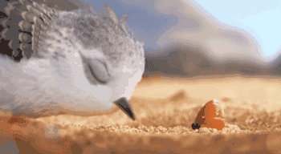

首页
关于我
健 见
Still Waters Run Deep.
访问量:
次
菜单
Toggle navigation
2016-11-08
这么赞的动画我竟然才看到，迫不及待地分享给你们
阅读次数:
这是一部时长仅仅六6分钟，却制作筹备了3年的动画短片，讲述的是一只饥饿的小派珀，如何在小寄居蟹的帮助和启发下，克服恐水症，最终可以在海浪肆虐的沙滩上觅食的故事。
据说
这部动画耗时3年
最终
却仅仅呈现6分钟
但是
看过的人
无不被其所感动
英文名「Piper」
中文名「 鹬」 （yù）
我则更喜欢另一个名字
「小派珀历险记」
出自「 皮克斯」 之手
代表其最新的动画技术
讲述的是
一只饥饿的小派珀
如何克服恐水症
在海浪肆虐的沙滩上觅食的故事
动画短片
画面精美
每一帧都是那么精致
精致得做桌面一点也不过分
构思精巧
在小派珀和小寄居蟹萌翻我们的同时
让我们意识到
成长是需要勇气的
需要走出自己的舒适区
迎接各种外来的挑战
让我们意识到
授之以鱼不如授之以渔
教育孩子应该学会放手
要他们学会自己尝试
让我们意识到
珍惜身边出现的每一个朋友
或许下一个人生的启发就来自那里

让我们意识到
我们有理由相信
同样的事情自己可以做的一样好
甚至于可以做的比大多数人更好
情节紧凑
短短的六分钟
串联起了自然 童年 亲情 友情和成长
萌萌哒的画画下
讲述的却是最温暖的故事
原来
换了一个视角
便可能发现更好的未来
人生竟也会因此而不同
愿今天给大家分享的这部治愈系动画，可以给您的生活带来些许正能量。
花3000块学到的商业分析套路 | 第一弹「客户分析」 →